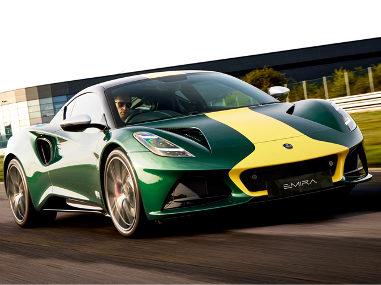

Нажмите на изображение, чтобы открыть в полном размере (новая вкладка)
Lotus Emira — последний автомобиль британской марки с двигателем внутреннего сгорания. Представлен в 2021 году, выпускается с 2022 года. Сочетает в себе динамику суперкара и повседневную практичность.
Emira создан на новой алюминиевой платформе Lotus. Дизайн выполнен в философии «машина для водителя»: центральное расположение двигателя, точное рулевое управление, оптимальное распределение веса. Доступен с механической КПП или роботом DCT. Интерьер сочетает кожу, Alcantara и цифровую приборную панель. Это прощальный ДВС-спорткар Lotus, который ещё можно заказать с атмосферным V6 от Toyota.